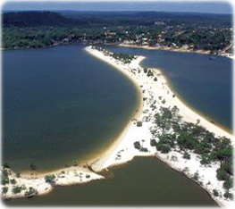

Seja bem vindo ao estado do Para.
O Pará é um estado localizado na região Norte do Brasil, conhecido por sua vasta extensão territorial e por sua rica biodiversidade. Sua capital é Belém, uma cidade vibrante às margens do rio Guamá, famosa por sua cultura, culinária e pelo Mercado Ver-o-Peso, um dos maiores mercados ao ar livre da América Latina. O Pará possui uma grande variedade de ecossistemas, incluindo a Floresta Amazônica, rios imensos como o rio Xingu e o rio Tocantins, além de áreas de manguezais e praias ao longo do litoral. A economia do estado é baseada na mineração, na agricultura, na pesca e na exploração de recursos naturais. O Pará também é conhecido por suas festas tradicionais, como o Círio de Nazaré, uma das maiores celebrações religiosas do Brasil. É um lugar cheio de belezas naturais e culturais que refletem a diversidade da região Norte. Se quiser mais detalhes, é só pedir!

voltar